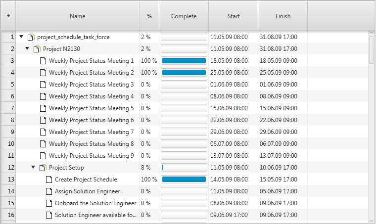
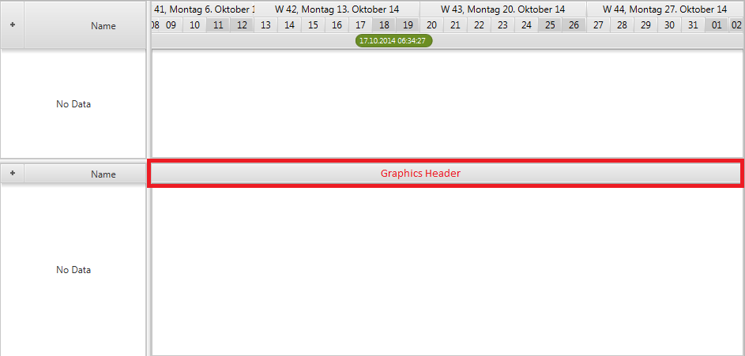
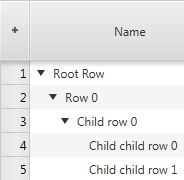
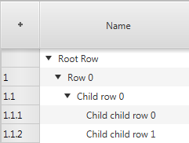
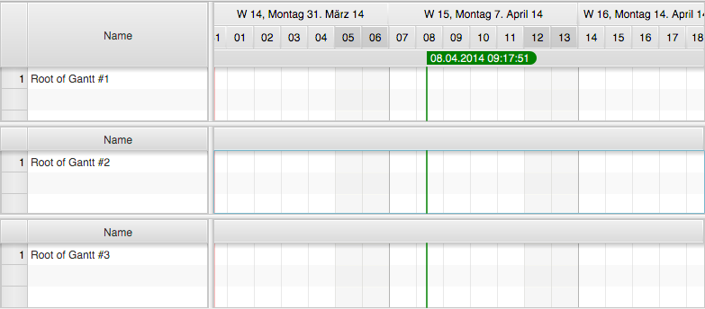
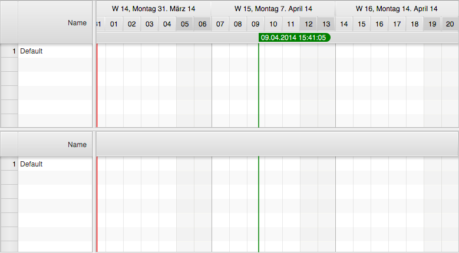
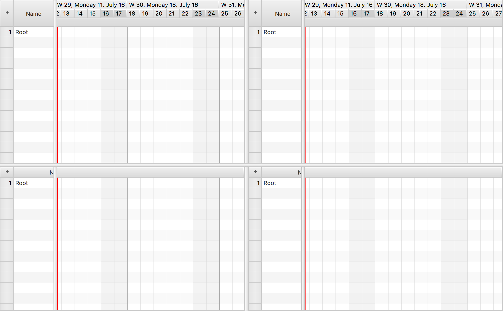

概述
GanttChart 控件是一个自定义 JavaFX 控件，用于沿时间轴可视化任意类型的排程数据。
该控件所需的模型数据由包含活动的行、活动之间的链接，以及用于对活动进行分组的层组成。
GanttChart 控件由多个复杂的子控件组成：
| 控件 | 说明 |
|---|---|
| TreeTableView | 显示在左侧，用于展示行的层级结构。这是 JavaFX 随附的标准树表视图。 |
| GraphicsBase | 显示在右侧，用于以图形方式呈现模型数据。 |
| 时间轴 | 显示在图形视图上方。Timeline 本身由两个子控件组成（Dateline 和 Eventline）。 |
| 日期线 | 显示日、周、月、年等。 |
| 事件线 | 显示各种时间标记。也可以显示冻结行（不会垂直滚动的行）。 |
下面的截图展示了空 GanttChart 控件的初始外观。

主/详情面板
甘特图使用 ControlsFX 中的两个 MasterDetailPane 实例来实现高层布局。主/详情面板将树表作为其详情节点，次级主/详情面板初始时将属性表作为其详情节点。属性表用于开发阶段，也可以通过调用 setDetail(Node) 替换为任意节点。属性表展示了控件、渲染器和系统层使用的大量属性，用于微调控件外观。其中许多属性都可以在运行时修改。下表列出了处理主/详情面板时相关的方法：
| 方法 | 说明 |
|---|---|
| setDetail(Node); | 设置作为次级主/详情面板详情节点显示的节点。 |
| getDetail(Node); | 获取作为次级主/详情面板详情节点显示的节点。 |
| getPrimaryMasterDetailPane(); | 返回主/详情面板。该面板将树表视图作为详情区域，并将次级主/详情面板作为主区域。 |
| getSecondaryMasterDetailPane(); | 返回次级主/详情面板。该面板将图形视图作为主区域，并将一个可选节点作为详情区域。 |
模型
GanttChart 控件本身没有模型。它只是提供便捷方法和数据结构，以支持底层控件（树表视图、图形视图）。下表列出了相关方法：
| 方法 | 说明 |
|---|---|
| void setRoot(R row); | 设置底层树表视图控件的根节点。 |
| R getRoot(); | 获取底层树表视图控件的根节点。 |
| ObservableList<Layer> getLayers(); | 图形视图将显示的层列表。 |
| ObservableList<ActivityLink<?>> getLinks(); | 图形视图将显示的链接列表。 |
| ObservableLis<Calendar<?>> getCalendars(); | 图形视图将显示的日历列表。 |
显示模式
GanttChart 控件的 displayMode 属性用于在三种不同布局之间切换：
- 标准 – 树表视图显示在左侧、图形区域显示在右侧的布局。
- 仅表格 – 表格占满整个甘特图控件宽度的布局。
- 仅图形 – 图形视图占满整个
GanttChart控件宽度的布局。
可以通过调用 setDisplayMode() 方法更改显示模式。下面的截图展示了不同的显示模式。
标准布局

仅表格布局

仅图形布局

图形标题区
当甘特图控件用于多甘特图上下文时，图形标题区节点会替代 Timeline，例如在 DualGanttChartContainer 或 MultiGanttChartContainer 中使用时。

可以通过调用 GanttChart.setGraphicsHeader(Node) 设置该节点。传给此方法的节点可以是任意节点。唯一需要注意的是，该节点的首选高度必须与树表表头的首选高度设置为相同值。
行标题 – 树表视图中的第一列称为“行标题”。该列由框架提供，无法移除。默认情况下，它用于显示行号，但也可以复用于其他用途。RowHeader 类是 TreeTableColumn 的子类，并包含一些特殊逻辑。它支持行尺寸调整，并且可能回调工厂来生成其图形内容。
行标题类型 - 枚举 RowHeaderType 定义了行标题的不同使用方式。
- GRAPHIC_NODE – 让行标题单元格为每一行显示一个自定义节点。

- LEVEL_NUMBER – 让行标题单元格显示当前行的层级编号（1、1.1、1.2、2、2.1、2.2、2.3……）。

- ROW_NUMBER – 让行标题单元格显示当前行的编号（1、2、3……）。

行标题工厂 – 如果选择 GRAPHIC_NODE 类型，行标题就会回调由 GanttChart 类提供的行标题节点工厂。下面的示例展示了如何注册该工厂的一种可能实现。
ganttChart.setRowHeaderNodeFactory(row -> {
public Node call(R row) {
Button delete = new Button("Delete");
delete.setOnAction(evt -> deleteRow(row));
return delete;
}
});
属性表
甘特图详情节点属性默认使用的控件是 ControlsFX 开源项目中的属性表。它用于显示甘特图本身及其子控件（Timeline、Dateline、Eventline、Graphics）的属性。它还会显示所有已注册到控件的渲染器属性。下面的截图展示了属性表被设置为甘特图详情节点时的外观。随后可以通过调用 GanttChart.setShowDetail(true) 使其可见。

编写自己的渲染器时，可以重写 getPropertySheetItems() 方法，并将自定义项添加到超类返回的项列表中。
其他功能
固定单元格大小 – JavaFX 的树表视图和列表视图都支持名为 fixedCellSize 的属性。它可用于提升这两个控件的性能。做法是将其设置为 -1 以外的值。这样的值会告知控件每个单元格都具有相同高度，从而在更新控件时使用更快的算法。GanttChart 类也定义了此属性，以确保其使用的树表视图和列表视图采用相同的单元格大小。如果设置了该属性，甘特图将不会使用行的 height 属性，也不允许用户调整行高。
主 Timeline – GanttChart 控件定义了一个名为 masterTimeLine 的属性。当甘特图用于多甘特图上下文（例如 DualGanttChartContainer 或 MultiGanttChartContainer）时会使用该属性。在这些情况下，顶部甘特图的 Timeline 是渲染周末、网格线等内容的基准。每个甘特图仍然拥有自己的 Timeline 子控件，但它们都会知道哪一个是主 Timeline。这是框架功能，应用程序通常不应干预。
滚动条类型 – GanttChart 控件支持不同类型的滚动条。可以通过调用 GanttChartBase.setScrollBarType(ScrollBarType) 设置类型。当前可用的类型如下：
NONE- 甘特图不会提供任何滚动条。树表视图和图形区域都不会有滚动条。这样的甘特图只能通过键盘、鼠标滚轮或触控输入设备滚动。INFINITE- 甘特图会为树表视图显示常规滚动条，并显示一个名为 TimelineScrollBar 的滚动条，其内部使用 PlusMinusSlider（由 ControlsFX 项目提供）。该滑块允许以不同速度向过去或未来滚动。此滚动条不需要指定滚动“范围”（可滚动到的最早/最晚时间）。FIXED_HORIZON- 甘特图会为树表视图和图形区域显示常规滚动条。滚动条边界基于 TimelineModel 定义的范围开始时间和结束时间。
滚动条可见性 - 另一个与滚动条相关的配置选项是布尔属性 autoHideScrollBars。如果设置为 true，树表视图（左侧）和图形区域（右侧）的滚动条将放置在 HiddenSidesPane 实例中。这个来自 ControlsFX 的容器控件可以显示或隐藏放置在其某一侧的控件。在此情况下，滚动条会放在“底部”一侧，并且只有当用户将鼠标指针移近边缘时才会出现。
位置 – GanttChart 类的 position 属性用于告知甘特图在多甘特图上下文（例如 DualGanttChartContainer 或 MultiGanttChartContainer）中的位置。可能的值包括：
ONLY- 该甘特图是唯一一个。这是默认值；如果未在多甘特图上下文中使用，则不会改变。FIRST- 甘特图显示在容器顶部。MIDDLE- 甘特图既不是第一个，也不是最后一个；同时也不是唯一一个。LAST- 甘特图显示在容器底部。
下面的截图展示了 MultiGanttChartContainer 中的三个图表及其位置值。

工厂方法 – 有几个受保护的工厂方法用于创建子控件。可以重写这些方法来创建这些控件的子类。
TreeTableView createTreeTable();- 创建显示在甘特图左侧的树表视图。替换此表格的典型用例是你已经拥有一个带有高级过滤或交互选项的树表视图特化实现，并希望复用应用程序在其他位置已经使用的同一个树表视图。Timeline createTimeline();- 创建 Timeline。GraphicsBase createGraphics();- 创建图形视图。替换标准图形视图的一种用例是应用程序需要向图形视图添加若干节点，例如在图形之上叠加某种内容（例如雷达）。RowHeader createRowHeader();- 为树表视图创建行标题列。
GattChartLite
GanttChartLite 与 GanttChart 基本相同，只是它不会在左侧显示 TreeTableView。当应用程序不需要为每一行显示大量详细信息时，这类图表很有用。通常只显示行名称（例如飞机名称）就足够了。在这种情况下，可以选择 轻量版，并结合行标题和行标题工厂使用。
甘特图容器
甘特图可以独立使用，也可以放在 MultiGanttChartContainer 或 DualGanttChartContainer 中使用。当在这些容器之一中使用时，甘特图的位置就很重要。控件可以是第一个图表、最后一个图表、唯一图表，或者位于中间的某个图表。“第一个”或“唯一”图表始终显示 Timeline。“中间”或“最后一个”图表会显示特殊标题区（参见 setGraphicsHeader()）。这些容器也是控件区分 Timeline（getTimeline()）和 主 Timeline（getMasterTimeline()）的原因。主 Timeline 是“第一个”图表显示的 Timeline，而常规 Timeline 则直接属于当前实例。
FlexGanttFX 随附了多个能够同时显示多个甘特图的容器。
MultiGattChartContainer,MultiGattChartLiteContainer- 能够显示多个GanttChart/GanttChartLite实例的容器，并保持它们的布局（相同表格宽度、相同 Timeline）以及滚动和缩放行为同步。下面的截图展示了空多甘特图容器的初始外观。

DualGanttChartContainer,DualGanttChartLiteContainer-MultiGanttChartContainer的一种特化容器，能够精确显示两个GanttChart实例，并保持它们的布局（相同表格宽度、相同 Timeline）以及滚动和缩放行为同步。该容器区分主甘特图和次级甘特图，其中次级甘特图位于MasterDetailPane的详情节点区域。它可以按需隐藏或显示。两个甘特图各自都可以拥有自己的页眉和页脚。初始情况下，只使用主页眉和次级页脚。页眉用于显示GanttChartToolBar实例，页脚用于显示GanttChartStatusBar实例。下面的截图展示了空双甘特图控件的初始外观。

QuadGanttChartContainer,QuadGanttChartLiteContainer-MultiGanttChartContainer的一种特化容器，能够精确显示四个GanttChart实例，并保持它们的布局（相同表格宽度、相同 Timeline）以及滚动和缩放行为同步。该容器区分甘特图位置UPPER_LEFT、UPPER_RIGHT、LOWER_LEFT、LOWER_RIGHT。UPPER_LEFT和LOWER_LEFT甘特图的 Timeline 会同步滚动，UPPER_RIGHT和LOWER_RIGHT的 Timeline 也会同步滚动。
